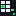
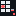

512×512 — für macOS / Referenz

connected
error16×16 px — wie im System-Tray
64×64 px — pixel-perfect skaliert
Button-Grid
2×3 helle Rechtecke = Mini-Companion-Panel
Akzent-Button
Mittlerer linker Button = statusfarbe (aktive Taste)
Regler
Kleiner Slider rechts = Fader/Control
Status-Dot
2×2px unten rechts = Verbindungsstatus